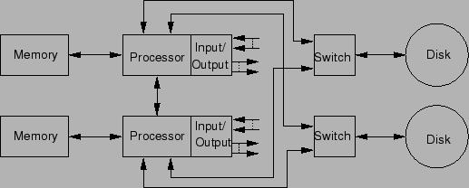

Next: การประยุกต์ใช้ในระบบที่มีความสามารถในการคงการบริการสูง (High Availability Applications)
Up: งานประยุกต์ของระบบที่คงทนต่อความเสียหาย
Previous: การประยุกต์ใชัในระบบคำนวณที่มีความสำคัญ (Critical-Computation Applications)
Contents
Index
ระบบที่ต้องการยืดเวลาการซ่อมบำรุง จะถูกนำมาใช้ในกรณีที่การซ่อมบำรุงมีค่าใช้จ่ายสูงมาก, ไม่สะดวกในการซ่อมบำรุง, หรือทำการซ่อมบำรุงได้ยาก เช่น การซ่อมบำรุงดาวเทียม หรือการซ่อมบำรุงสถานีวิทยุที่อยู่ห่างไกล ความต้องการของผู้ออกแบบคือ ใช้เทคนิคของความคงทนต่อความเสียหายในการยืดเวลาการบำรุงรักษา
ระบบสวิทช์โทรศัพท์เป็นตัวอย่างของระบบที่ต้องการการยืดเวลาการซ่อมบำรุง ซึ่งจุดติดตั้งระบบสวิทช์อาจอยู่ในจุดที่ห่างไกล ที่มีค่าใช้จ่ายสูงในการบำรุงรักษา ถ้าสามารถออกแบบระบบให้ทนทานต่อการเสียหาย อาจสามารถขยายระยะเวลาในการบำรุงรักษาออกไปได้ รูป 9.4 เป็นตัวประมวลผลรุ่น 3B20D ที่ใช้ในระบบสวิทช์อิเล็กทรอนิกส์ ทุกโมดูลในระบบมีตัวสำรอง อีกทั้งโมดูลสำรองยังทำให้สามารถใช้งานระบบได้ขณะที่มีการซ่อม
Figure 9.4:
ตัวประมวลผลรุ่น 3B20D ที่ใช้ในระบบสวิทช์อิเล็กทรอนิกส์
เป็นตัวอย่างการประยุกต์ของระบบที่ต้องการยืดเวลาการซ่อมบำรุง
|

|
Vara Varavithya
2002-03-09